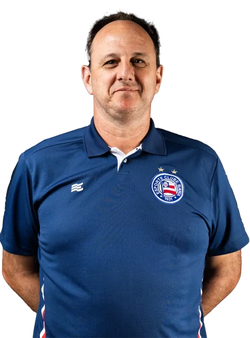

|

|
|
QUEM É ROGÉRIO CENI? 🧤⚽
Ídolo, goleiro e artilheiro
Rogério Ceni é um dos maiores ídolos da história do futebol brasileiro.
Ex-goleiro
do São Paulo Futebol Clube, atuou por mais de 20
anos no clube, onde se
consagrou como o goleiro que mais marcou gols na história do futebol mundial,
com
131 gols.
Nascido em 1973,
no Paraná, Ceni começou sua carreira no Sinop (MT), mas foi
no
São Paulo onde se eternizou, conquistando títulos como a Libertadores,
o
Mundial
de Clubes, Campeonatos Brasileiros, Paulistas, entre outros.
Além da habilidade debaixo das traves, ficou famoso por sua
precisão em
cobranças de faltas e pênaltis. Após se aposentar em 2015, iniciou carreira como
treinador, passando por clubes como
Fortaleza, Flamengo e atualmente comanda
o
Bahia.
Rogério Ceni representa dedicação, lealdade e inovação no futebol.
|
|